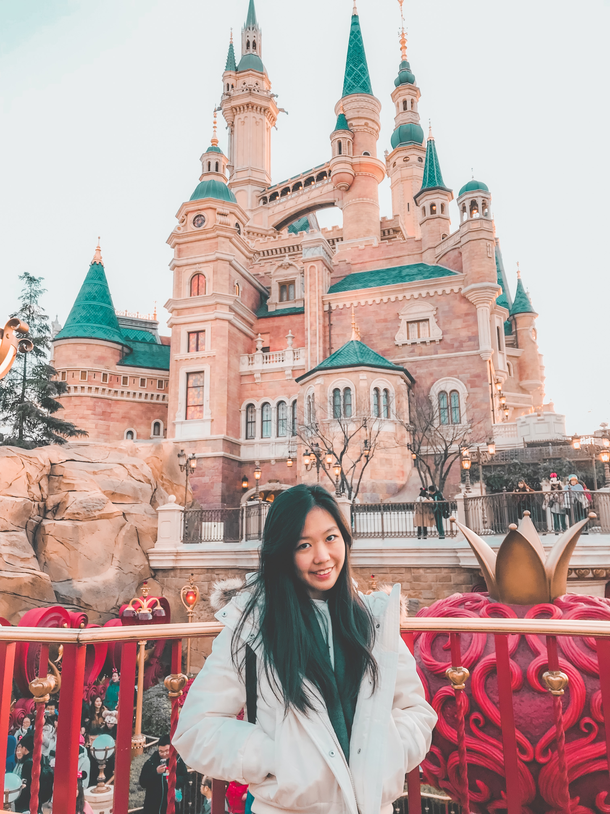

Karen "Kell" Natalia

Summary
I am a highly motivated and dedicated third-year student majoring in Bioenvironmental Systems Engineering at National Taiwan University. My passion for climate change and marine ecology and conservation has driven me to excel academically, and I am committed to pursuing a career in this field. Despite my family’s financial challenges, I have consistently maintained a balance between studying, working, and gaining hands-on experience as an Undergraduate Research Assistant in the Functional Reef Ecology Lab. Additionally, my involvement in various organizations has allowed me to develop leadership skills and contribute to the community. I am eager to continue my academic journey and make a positive impact in the world, and I believe that this scholarship will provide me with the necessary support to achieve my goals.
Education
National Taiwan University, Taipei (2020-2024)
Department of Bioenvironmental Systems Engineering
Coursework: Coral Reef Ecosystem in a Changing World, French (II), Spatial Information, Computer Application and Programming, Marine Ecology, Bending The Curve: Climate Change Solutions, Open Channel Hydraulics
Specialization: Marine Ecology and Conservation & French Language Plus
Organizations: International Companion for Learning Student Association (ICLSA) & National Taiwan University Indonesia Student Association member (NTUISA)
Experiences
Undergraduate Research Assistant (Taipei, Taiwan)
Functional Reef Ecology Lab (March 2023 - present)
- Using and teaching an Artificial Intelligence tool called CoralNet to identify and label the different species of coral
in Taiwan using computer vision.
- Helping Post-Doctoral Researcher’s experiments in the lab including identifying and counting the algae and
cnidocytes inside the coral.
- Stayed up-to-date with current research in functional reef ecology by attending regular lab meetings and journal
club discussions
Social Media Manager (Taipei, Taiwan)
Anggrek Online (December 2021 - present)
- Developing and implementing social media strategies to increase brand awareness, engagement, and sales.
- Creating and curating engaging content for social media channels, including Instagram, Facebook, and TikTok.
- Managing social media accounts, including scheduling and posting content, responding to customer inquiries, and
monitoring analytics.
- Conducted engaging and interactive live sessions on various social media platforms to showcase products, answer
customer questions, and drive sales
Team Leader (Bandung, Indonesia)
Big Bad Wolf Book Festival (May 2019)
- Leading and supervised a team of 5 volunteers to ensure smooth and efficient operations of the 3 weeks of the
book festival.
- Coordinating with other departments and stakeholders to ensure the successful execution of the event.
- Interacting with festival attendees and addressing their concerns or questions in a professional and courteous
manner.
- Conducting post-event evaluations and debriefing sessions to identify areas for improvement and make recommen-
dations for future events.
Awards
- Volunteer award for International Companion for Learning (ICL) by the Ministry of Education Taiwan
(January 2022)
- Student Loan from Persatuan Pelajar Indonesia di Taiwan (Perpita) (August 2021-December 2022)
- NTU Financial Assistance Grant for International Students from National Taiwan Univeristy (September 2023 - August 2024)
Skills
Programming:
Language:
- Indonesian
- English
- Chinese
- French
Others:
- Archery
- Plank for 5 minutes
- Read in the shower
- Split
- Read 150 books a year
My hobbies
Contact Me HERE